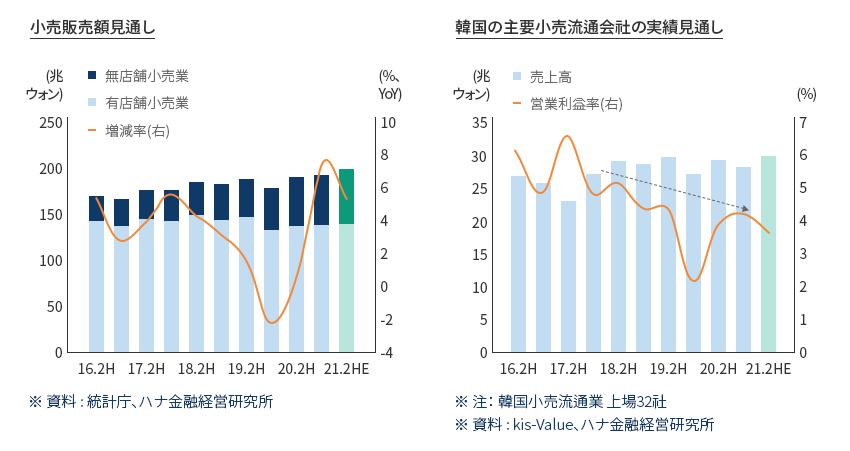
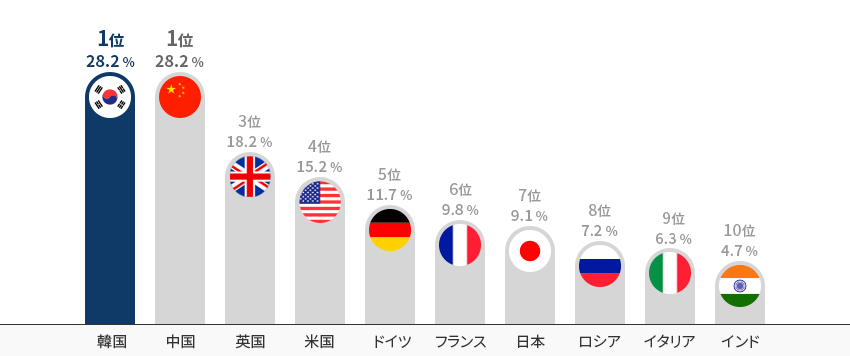
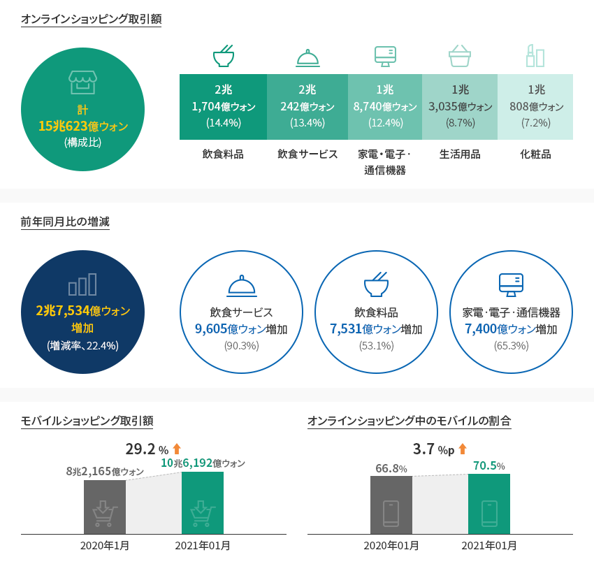
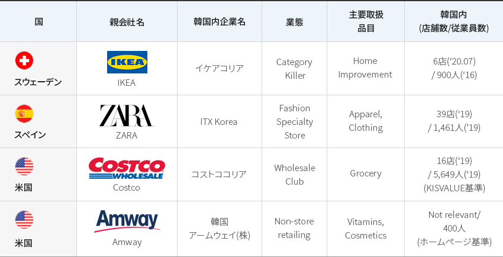
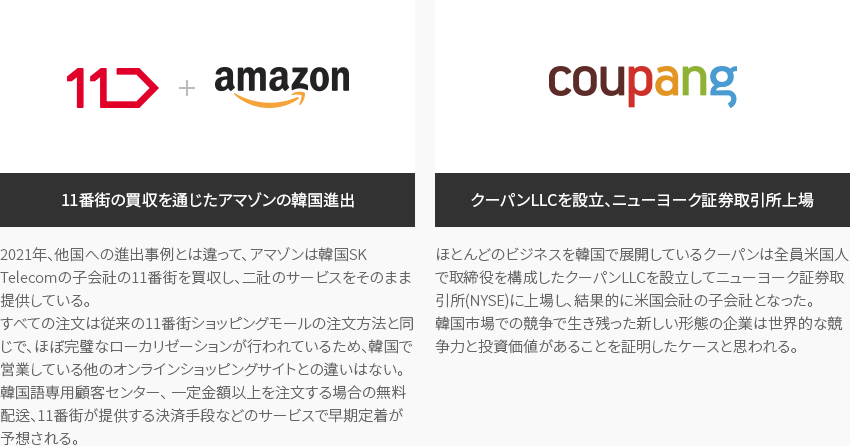
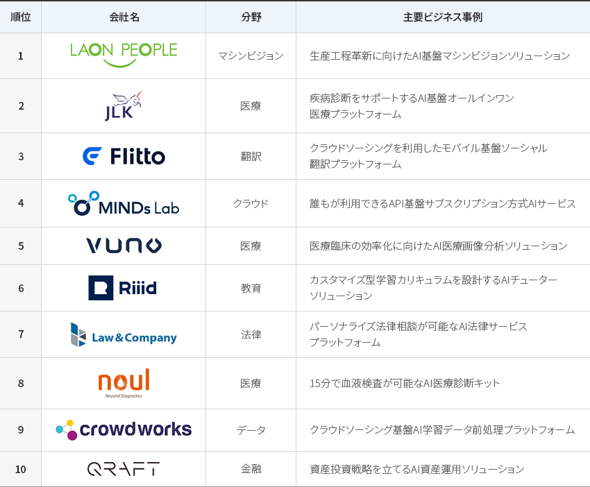
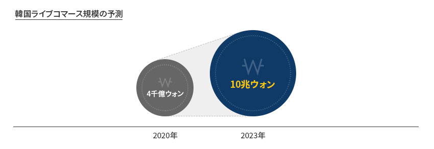
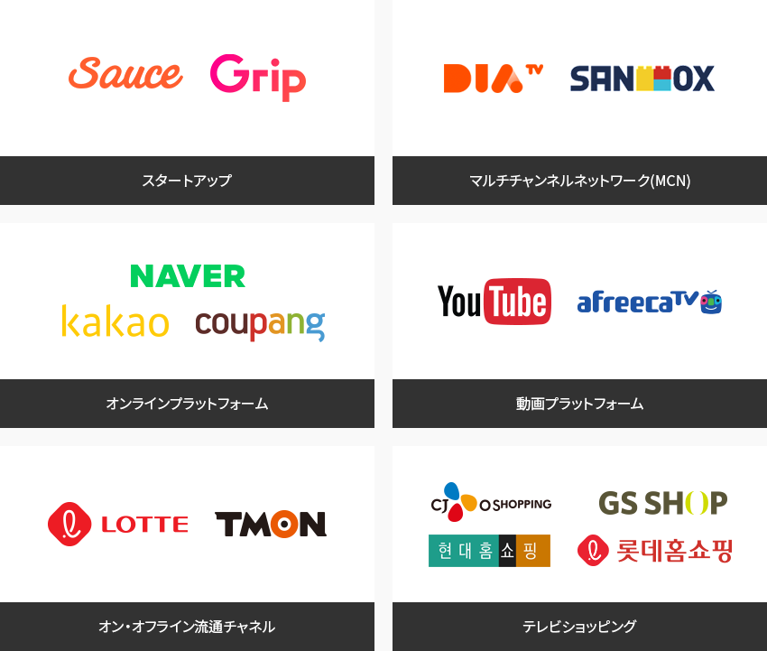

流通
- Home
- Why KOREA
- 産業
- 流通
流通
Distributions
-
コロナ禍で証明された 強固な韓国内のサプライチェーン コンテンツを閉じるコロナ禍で証明された 強固な韓国内のサプライチェーンほとんどの国々でコロナ禍によって発生した買い溜め現象が韓国では一切発生していない理由は、
韓国内の強固なサプライチェーンにある。ソーシング、製造、流通、販売に至る国内のサプライチェーンが危機状況でも揺るがずに
機能した結果である。ほとんどの生活必需品が韓国内で生産され、オンラインとオフラインで展開している数多くの店舗、
世界最強の宅配及び配達システム、何回もの危機を経験した消費者、海外各地に敷かれているソーシングネットワークなど、
すべての要素が 力強い国内サプライチェーンを支えている。その結果、2020年にも比較的安定した小売販売水準が維持され、一定水準で生産をけん引している。
小売全体の販売額指数をみると、2015年を100にした場合、2021年2月は115.2でコロナ禍以前の
2019年12月の116.2とも僅差である。「コロナ禍でも比較的安定した小売販売」小売販売額見通し(無店舗小売業, 有店舗小売業, 増減率(右)) ※ 資料 : 統計庁、ハナ金融経営研究所韓国の主要小売流通会社の実績見通し (売上高, 営業利益率(右)) ※ 注： 韓国小売流通業 上場32社
※ 資料 : kis-Value、ハナ金融経営研究所 ※ 出所: ハナ証券
※ 出所: ハナ証券 -
デジタルテクノロジーで 危機を克服した非対面小売業 コンテンツを開くデジタルテクノロジーで 危機を克服した非対面小売業コロナ禍によって非対面小売の必要性が増加している中、これまでも韓国の小売市場で最大のシェアを占める
業態はオンラインショッピングだった。オンラインショッピングにはテレビショッピング、パソコン(PC)基盤オンラインショッピング、
そしてモバイル基盤オンラインショッピングが含まれる。パソコンとモバイルを通じた電子商取引の割合は2019年にすでに世界トップとなっている。「小売流通市場に比べた電子商取引の割合(2019)」
※ 資料 : Euromornitor International (2019)興味深いのはテレビショッピングの市場規模が他国に比べて非常に大きいことであるが、これも非対面小売業に該当する。
テレビショッピング、パソコン基盤オンラインショッピング、モバイル基盤オンラインショッピングがすべて成長し、
オフライン小売業の不振を挽回した。 特にモバイルオンラインショッピングの成長が目立っている。2020年1月に比べると
21年1月には29.2%成長した10兆6,000億ウォンの売上となり、オンラインショッピングに占めるモバイルの割合も統計庁基準で70%を超えている。「2020年韓国小売業の現況」2020年韓国小売業の現況 年度, 前年比増減率 2019 2020 前年比増減率 オンラインショッピング小計 149.4 176.2 17.94% テレビショッピング 14.1 15.1 7.09% パソコン基盤ショッピング 48.0 52.5 9.37% モバイル基盤ショッピング 87.3 108.6 24.40% 大型スーパー 32.4 33.8 4.32% 百貨店 30.4 27.4 -9.87% スーパーマーケット 44.2 46.5 5.20% コンビニエンスストア 25.7 26.5 3.11% 専門小売店 135.4 122.0 -9.90% 訪問・連鎖販売 15.4 14.8 -3.90% グローサリー総計 417.5 447.2 7.11% ※ グローサリー総計 -
韓国流通市場、オンラインショッピングとモバイルショッピングを基盤にして持続的に成長 コンテンツを開く韓国流通市場、 オンラインショッピングとモバイルショッピングを基盤にして持続的に成長韓国の非対面小売市場で特に注目すべき点は、コールドチェーンの完成と迅速な宅配サービスのおかげで
飲食料品と飲食サービス分野での取引が急速に増えたことである。飲食サービスは前年同月比90.3%で、
飲食料品は53%以上増加しており、オンラインショッピング全体にこの二品目が占める割合は27.8%となっている。多様な決済システム、
飲食サービス市場の様々なプラットホーム、洗練されたオンラインプロモーション、世界最高速度のインターネット及び無料サービス、
世界トップ水準の携帯電話普及率などがこのような成果を後押ししている。「韓国のオンラインショッピング市場とモバイルショッピング」オンラインショッピング取引額 - 計15兆623億ウォン(構成比)- 飲食料品 - 2兆 1,704億ウォン(14.4%)
- 飲食サービス - 2兆 242億ウォン(13.4%)
- 家電・電子ㆍ通信機器 - 1兆 8,740億ウォン(12.4%)
- 生活用品 - 1兆 3,035億ウォン(8.7%)
- 化粧品 - 1兆 808億ウォン(7.2%)
前年同月比の増減 - 2兆 7,534億ウォン 増加 (増減率、22.4%)- 飲食サービス - 9,605億ウォン 増加 (90.3%)
- 飲食料品 - 7,531億ウォン 増加 (53.1%)
- 家電ㆍ電子ㆍ通信機器 - 7,400億ウォン 増加 (65.3%)
- モバイルショッピング取引額 - 2020年1月 : 8兆 2,165億ウォン > 2021年1月 : 10兆 6,912億ウォン (29.2% 増加)
- オンラインショッピング中のモバイルの割合 - 2020年1月 : 66.8% > 2021年1月 : 70.5% (3.7%p 増加)
※ 出所 : 統計庁(2021.1月)「2021年1月オンラインショッピングの動向」 -
グローバル企業、韓国進出後に 売上上位を記録 コンテンツを開くグローバル企業、韓国進出後に 売上上位を記録韓国の小売業界の特徴は、複数の販売チャネルを保有しており、テレビショッピングはもちろん、モバイル、パソコン、百貨店、
大型スーパー、スーパーマーケット、コンビニエンスストアを同時に運営していることである。現在、当該企業はオムニチャネルの
構築に力を入れており、特定業態にのみ強いという企業は韓国ではほとんど見られない。韓国に進出したイケア(IKEA)、ZARA、コストコ、そして2021年に進出したアマゾンのような海外企業がその隙間をうめている。
イケアは韓国への進出に成功し、堅調な売上実績を基盤にして店舗を増やしており、コストコは韓国支店(ソウル良才)で
世界のコストコ店舗の中で最も高い売上を記録するなど、多くのグローバル流通企業が韓国で良好な業績を上げている。「韓国進出の主要グローバル流通企業」韓国進出の主要グローバル流通企業 国, 親会社名, 国内会社名, 業態, 主要取扱品目, 国内店舗数/従業員数) 国 親会社名 国内会社名 業態 主要取扱品目 国内店舗数/従業員数) スウェーデン IKEA イケアコリア Category Killer Home Improvement 6店(‘20.07) / 900人(‘16) スペイン ZARA ITX KOREA Fashion Specialty Store Apparel, Clothing 39店(‘19) / 1,461人 (‘19) 米国 Costco コストココリア Wholesale Club Grocery 16店 (‘19) / 5,649人(‘19) (KISVALUE基準) 米国 Amway 韓国アムウェイ(株) Non-store retailing Vitamins, Cosmetics Not relevant/400人 (ホームページ基準)
※ 資料協力: 崇実大学IT流通物流学科- 11番街の買収を通じたアマゾンの韓国進出 - 2021年、他国への進出事例とは違って、アマゾンは韓国SK Telecomの子会社の11番街を買収し、二社のサービスをそのまま提供している。 すべての注文は従来の11番街ショッピングモールの注文方法と同じで、ほぼ完璧なローカリゼーションが行われているため、韓国で営業している他のオンラインショッピングサイトとの違いはない。 韓国語専用顧客センター、 一定金額以上を注文する場合の無料配送、11番街が提供する決済手段などのサービスで早期定着が予想される。
- クーパンLLCを設立、ニューヨーク証券取引所上場 - ほとんどのビジネスを韓国で展開しているクーパンは全員米国人で取締役を構成したクーパンLLCを設立してニューヨーク証券取引所(NYSE)に上場し、結果的に米国会社の子会社となった。 韓国市場での競争で生き残った新しい形態の企業は世界的な競争力と投資価値があることを証明したケースと思われる。
-
流通、物流分野の デジタルトランスフォーメーションに対する支援サービス コンテンツを開く流通、物流分野の デジタルトランスフォーメーションに対する支援サービス流通産業はデジタルトランスフォーメーション(Digital Transformation)が非常に急速に進んでいる産業である。
韓国の小売業界もオムニチャネルを構築し、AI、ビッグデータ、スマート倉庫などに莫大な投資をしている。にもかかわらず、
これらを的確に支援する 高い能力を持つ国内企業はなかなかおらず、流通と物流分野においてはなおさらである。
デジタルトランスフォーメーションの支援に 多くの経験を蓄積してきた海外の専門企業にとって韓国市場は成長潜在力が大きいものの、まだ未開拓市場だと言える。「AI分野の韓国Top 10スタートアップ」AI分野の韓国Top 10スタートアップ 順位, 会社名, 分野, 主要ビジネス事例 順位 会社名 分野 主要ビジネス事例 1 LAON PEOPLE マシンビジョン 生産工程革新に向けたAI基盤マシンビジョンソリューション 2 JLK 医療 疾病診断をサポートするAI基盤オールインワン医療プラットフォーム 3 Flitto 翻訳 クラウドソーシングを利用したモバイル基盤ソーシャル翻訳プラットフォーム 4 MINDs Lab クラウド 誰もが利用できるAPI基盤サブスクリプション方式AIサービス 5 VUNO 医療 医療臨床の効率化に向けたAI医療画像分析ソリューション 6 Riiid 医療 カスタマイズ型学習カリキュラムを設計するAIチューターソリューション 7 Law&Company 法律 パーソナライズ法律相談が可能なAI法律サービスプラットフォーム 8 noul 医療 15分で血液検査が可能なAI医療診断キット 9 crowd works データ クラウドソーシング基盤AI学習データ前処理プラットフォーム 10 QRAFT 金融 資産投資戦略を立てるAI資産運用ソリューション
新しい技術に柔軟な 韓国の消費者 コンテンツを開く新しい技術に柔軟な 韓国の消費者韓国の消費者は新しい技術や営業方法に対して非常にオープンマインドである。教育水準が高く、好奇心が強い韓国の消費者は、
革新のスピードが非常に速いデジタル時代に柔軟に適応している。モバイルショッピングの代表格となったクーパンの成功はこの
ような韓国の消費者が顧客基盤になっているからこそ可能であったと言える。ビデオコマース、メタバースなど新しいフォーマットの
チャネルが続々と登場しているが、韓国市場ではこれらのフォーマットは既によく知られていたり相当投資が進められている。
韓国市場は新しいビジネスモデルがいかに消費者に受け入れられるかを測る最適なテスト市場であるといえる。「韓国のライブコマース市場」 2023年 10兆ウォン">
「ライブコマース関連企業」- スタートアップ - Sauce, Grip
- マルチチャンネルネットワーク(MCN) - DIA TV, SANDBOX
- オンラインプラットフォーム - Naver, Kakao, coupang
- 動画プラットフォーム - Youtube, afreecaTV
- オン・オフライン流通チャネル - LOTTE, TMON
- テレビショッピング - CJ O shopping, GS SHOP, Hyundae homeshopping, LOTTE homeshopping
※ 出所: 教保証券


Invest KOREA
流通/物流PM
カン・ナムフン
サービス産業誘致チーム
T.+82-2-3460-3285